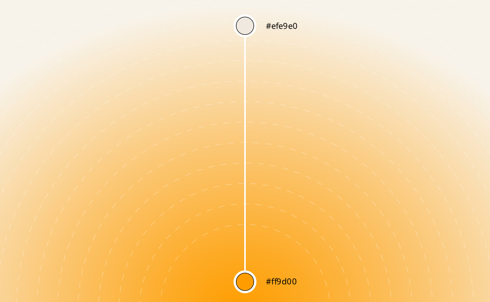

NewMed Skills · Brand Guidelines
The single source of truth for how NewMed Skills looks, sounds and behaves. Pick a foundation to begin — every asset and value is ready to copy or download.
The idea underneath.
NewMed Skills moves qualified clinicians across borders — and replaces an anxious, low-trust process with something calm, specific and sequential.
What we do
NewMed Skills sources, assesses, licenses and deploys workforce-ready healthcare professionals for hospitals across major geographies. One platform manages the entire journey — from first assessment to first shift — sourcing clinical talent from India, Asia and Africa and deploying licensed, verified professionals to the UK, GCC, Europe and North America.
Two people rely on us. The candidate — a nurse or doctor ready to work abroad. And the hospital — a team that needs qualified people without six months of unscreened CVs. We name every credential and system plainly — Prometric, DataFlow, licensing exams — and we speak to both audiences without changing who we are.

Clinical calm
Healthcare staffing is a low-trust category. Competitors sound like either body-shop salesmen — hype, urgency, promises — or enterprise software — sterile, jargon, "solutions." Both try to manufacture trust, and both fail, because trust is demonstrated, not claimed.
The opening neither competitor can occupy is clinical calm: the voice that doesn't need to raise itself to be believed. We write and design like a senior clinician speaks — someone who has done this a thousand times, states facts plainly, never oversells, and is calm precisely because they are competent.
The shape of the brand
The identity has one direction built into it. From exam to licence. From licence to placement. From one country to the next.
Everything moves from › to
Our symbol is an N built entirely from chevrons, a path rather than a badge. Whenever you design or write for NewMed Skills, show the reader the next step instead of a pile of features to assemble themselves.
A letter that points forward
The counters and terminals are cut as arrowheads. Read it once and it is an N. Look again and it is motion, the visual form of the promise to get someone across.
Six stages, one direction
Every candidate, and every layout, moves through the same sequence in order. Nothing skipped, no one rushed through.

Five attributes, always on
All five are present in every sentence and every layout, at every level of the register. They are the fixed identity.
The mark.
An N constructed from chevrons. Forward motion made from the letter itself. Give it room, keep it in its approved colours, and never redraw it.
Primary logo
The stack lockup is the primary logo: the chevron symbol beside the wordmark on two lines. Reach for this first. The other lockups exist for formats this one cannot fit.


On lightBone, Linen or white. The default presentation.
On darkReversed to cream on Clinical Ink.
On Signal OrangeSingle-colour cream only.
On ClaySingle-colour cream only.
Symbol and lockups
Six configurations cover every format. Choose the one that fits the space, then hold it. The symbol may stand alone as an icon, but never replaces the name in copy.

HorizontalThe default lockup.
StackSquare and centred layouts.

VerticalNarrow columns.
BadgeStamps and seals.

ShortTight horizontal spaces.

SymbolApp icon, avatar, favicon.
Clear space
Clear space is the area around the logo that stays empty at all times, so the mark is always distinguishable from surrounding graphics. The x in these diagrams marks the minimum clear space for each lockup.


Minimum sizeSymbol: 24 px on screen, 8 mm in print. Stack lockup: 140 px or 28 mm by width. Below this the chevron detail closes up and the wordmark stops reading.
The logo in use
How the mark behaves across the surfaces people actually meet it on.
Partnerships
When locking up with a partner, use the primary logo in single-colour ink or cream, and a monochrome version of the partner mark wherever one exists. Where the partner mark is a symbol and the words are not needed, our symbol may stand in for the full lockup. Clear space rules carry over, and a rule line divides the two marks.


Incorrect usage
The mark is fixed. If a situation seems to need one of these, it needs a different lockup instead.
The arrow
One shape carries the whole identity. A rounded start cap, a stretchable body, a pointed cap. It is a container, not an ornament: build layouts from it rather than decorating layouts with it.
Anatomy
The geometry is locked. Corner radius is 10% of the arrow's height. The point is 42.6% of the height. Colour and length change freely; the radius and the point angle never do.
is this one shape, stretched.
SolidThe default. Coral, or the amber to coral gradient for highlights.
OutlineLegitimate everywhere the solid is. Used for badges and quieter surfaces.
Text highlight
The signature treatment. The key words of a headline sit inside the arrow in white. Highlight the phrase that carries the movement or the promise, never filler and never the negative half of a sentence.
Healthcare Talent.
at a border.
Two words minimumNever highlight a single word. Make the highlight the last line and the orphan problem solves itself.
across borders
One per headlineCoral is the alternative fill. Two highlights in one headline cancel each other out.
The system in parts
The same shape does six other jobs. Each has a fixed role, so the arrow always means the same thing wherever it appears.
Eyebrow badgeOutline arrow, coral text, above hero headlines and as a section kicker.
CTAMarketing buttons are arrow-shaped. Product UI keeps the standard button.
Number and icon chipsThe squarer chip. A glyph inside fills about 60% of the chip optically, big and confident, never floating small in the middle.

{kind=link}
Portrait containerThe cutout clips to the arrow on the bottom half only. Head and shoulders are never clipped and jut freely above.
Journey and list rows
The arrow reads as a sequence. Chained left to right, each stage nests into the next — one continuous path from first contact to the ward. The same shape, repeated, carries the whole journey.
At poster scale
The arrow is strongest when it holds a whole composition. Stack translucent arrows as process layers, or let one arrow carry an entire hero.
Stacked layersEach arrow is a layer of the platform. Widths step down so the points read as a sequence.
Incorrect usage
The arrow is the identity. Distorting it or scattering it costs more than any other misuse in this manual.
Warm, with one cool note.
A grounded, warm palette does the everyday work. Signal Orange is used as a signal, a moment, not a wash. Click any swatch to copy its hex.
Signal Orange
Signal Orange is the hero of the palette and the one colour that carries the brand on its own. Use it where it means something: a link, a state, a single call to move. Used with restraint it holds the most weight, so it is never washed across a whole surface.
Secondary
Clinical Ink carries every word of text and every dark surface: a warm near-black, never a pure black. Amber extends the warmth beside orange, Clay adds depth for serious moments, and Vitals Teal is the one cool note and the most sparing of all.
Neutrals
Cream is the page. Linen is anything sunken into it: cards, panels, diagram grounds. Two tones per surface, never more.
Gradients
Gradients are always organic, soft and flowing: layered off-centre washes fading into cream, never hard-edged circles and never a colour from outside the palette. They carry ambient warmth behind a hero statement, and they never compete with the words on top of them.

The organic gradientThe master wash. Amber and coral bleed off the edges and resolve into cream, with no visible centre and no hard edge anywhere.
How a radial is built
Each radial runs from a single palette colour at full strength out to cream, across a long falloff. The construction below marks the two endpoints. Keep the falloff generous: a short one produces a visible ring, which reads as a hard edge.


Gradient generator
A live version of the same system. Every wash is composited from the seven brand colours only, so anything generated here is on-palette by construction. Shuffle for a new composition, then save it at print resolution.
Motion is slow and unlooping, and it pauses when scrolled out of view or when the system asks for reduced motion. The saved PNG is rendered fresh at full resolution, not upscaled from the preview.
Presets
Using a generated washSwitch ground flips which colour leads. Place a wash behind a hero statement or a whole section, never behind body copy, and keep type in Cream on the warm and dark grounds.
Colour modes
No single mode carries the full palette. Each medium has a preferred mode, so match the values to where the work will live.
| Mode | Application | Notes |
|---|---|---|
| HEX / RGB | Screen | The truest, most vibrant depiction of the palette. Use for every digital surface. |
| Pantone | Preferred for print. Matches the brand colours most reliably across stocks. Official values to be added. | |
| CMYK | Use only when Pantone is unavailable, matching to Pantone where possible. Official values to be added. |
Accessibility
Clinical Ink on Bone clears WCAG AA for body text. Signal Orange is for large text, icons and accents. Pair small text with ink or cream, never orange on orange.
Incorrect usage
The palette is fixed. Keep colours pure, keep contrast high, and let Signal Orange stay the accent.
One typeface, set with discipline.
The whole brand is set in Mona Sans — a humanist grotesk that stays calm and plainly legible, from 12 px compliance copy to a hero line. It is set with restraint so the words stay the loudest thing on the page, and it interlocks with the arrow to carry the promise.
Mona Sans
One typeface, no second family. Modern and open, it reads clearly for an audience that often reads English as a second language, and it holds its character from dense body text up to poster scale. Display is set tight and semibold; body stays regular and calm.

Type scale
A single scale runs from the hero statement down to an eyebrow label. Display sizes are semibold and tight; body sizes are regular at a calm 1.5 line-height. Big headlines stay at weight 600 — never heavier.
Weights
Mona Sans is a variable font from 200 to 900. Six weights do the work. The wordmark alone pairs two: Bold “NewMed” with Regular “Skills”.
Type and the arrow
The arrow is the identity’s container, and its most expressive use is a headline highlight: the key phrase set inside the arrow, in the gradient, resolving the line. It is the one place type and graphic fully interlock.

Two words or more
The arrow marks the phrase that carries the movement or the promise — never a single word, never a whole sentence.
Make it the last line
End the headline on the highlight so no word is left orphaned. The arrow phrase resolves the line.
One arrow per headline
A single dominant move. Two competing highlights cancel each other out.
Locked geometry
Rounded start cap, pointed end cap. Corner radius is 10% of the height, the point 42.6%. Colour may change; the shape never does.
Keep contrast inside
Cream text on the gradient, coral or ink fills; Clinical Ink text on amber. The word stays legible on the arrow.
The fill is the gradient
Default is the amber-to-coral gradient. Flat coral, amber or ink are the alternates for tighter or quieter settings.
How the arrow is built
Let x be half the cap-height of the type. The text sits in a box two x tall; the arrow adds x of clear space on every side, so it stands twice the cap-height and the letters never touch the caps. The start cap’s corner radius is 10% of the arrow height and the pointed cap runs 42.6% of it — the same locked geometry as every arrow in the system.


Arrow generator
Type a headline, then click a word to start the arrow and another to set where it ends. The caps always land on the ENDS of the run — rounded start, pointed finish — drawn with the exact locked geometry. Keep the highlight to two or three words and let it land the line.
Setting rules
A few mechanics keep the type calm and on-brand.
Sentence case
Headings and buttons are sentence case. ALL-CAPS is only for small eyebrow labels, letter-spaced 0.14em.
No orphans
Never leave one word alone on a line in a headline. Use balanced wrapping, or make the orphan the arrow phrase.
One idea per line
Headlines under eight words; body sentences under twenty. Every benefit answers “how?” in the same breath.
Numerals do work
Use figures when a number carries meaning — a 1:3 ratio, four steps, day one.
Voice & Tone
We write as a senior clinician speaks. Someone who has done this a thousand times, states facts plainly, never oversells, and is calm precisely because they are competent.
Our voice
Five attributes that never change, no matter what we are writing or who we are writing for. All five are active in every sentence.
Certain and plain
We state what we do as fact, not aspiration. Every claim carries a number or a mechanism. Much of our audience reads English as a second language, so we write short sentences and name the real systems.
We should be
- Certain
- Plain
- Specific
- Unhurried
- Factual
We should not be
- Hyped
- Vague
- Corporate
- Urgent
- Boastful
Back every claim
If a sentence cannot carry a number or a mechanism, cut it. Specificity is the credibility.
Name the real systems
Prometric, DataFlow, licensing exams. Never "the relevant authorities" or "compliance systems".
One idea per sentence
Short sentences, concrete verbs. Write as if translating for a capable new colleague.
Cut the bingo card
No transformation, orchestration, lifecycle, leverage, solutions, seamless, empower, ecosystem.
Warm and guiding
Warmth comes from naming the human stakes plainly, not from soft words. Moving a career across the world is a big decision, so we say so and then show the path.
We should be
- Steady
- Human
- Directional
- Sequential
- On your side
We should not be
- Pitying
- Cheerleading
- Abstract
- Sentimental
- Cold
Address the real fears
Fees, visas, arriving alone. Name them directly rather than papering over them.
Show the path
Use from and to constructions, numbered steps, action verbs: assess, train, license, deploy, support.
Answer how in the same breath
"Faster hiring, because screening is already done" beats "Faster hiring".
Keep the pronouns straight
Candidates are you. Hospitals are your team. NewMed Skills is always we.
Our tone
The voice is always the same. Tone is how near it stands to the reader. It never gets louder, it gets nearer. Choose one level per piece based on what is at stake.
Clinical note
The most precise, least decorated register. The reader is committed and wants the facts in full.
Briefing
Still precise, slightly nearer. A senior clinician briefing a peer. Efficient, but unmistakably written by a person.
Standard
The default for most of the site. Clear, plain, substantial. Stands out by being plainer, not louder.
Direct
Nearer still. Connects to the real emotion behind the decision without becoming hype.
Bedside
The nearest register, reserved and rare. One to one, for the highest stakes moment on a page.
The principle
A sentence at Bedside and one at Clinical note should read as the same calm, competent person. One filing a note, the other looking you in the eye.
Writing rules
Mechanical and non negotiable. Validate every piece of copy against these before it ships.
Naming
Always NewMed Skills. Two words, capital N, M and S. Never one word, never all caps in body copy.
Acronyms
Spell out on first use, then abbreviate. A nurse abroad may not know the acronym.
Mechanics
Sentence case for headings and buttons. All caps only for small labels. Numerals when a number is doing work.
Structure
Headlines under 8 words. Body sentences under 20. Split any sentence cramming two ideas.
Words we do not use
Reaching for one of these is a signal the sentence has gone abstract. Replace the word and the vagueness beneath it.
The 10 second check
Before anything ships, validate against these five. Any no is a required rewrite.
- 1Does every claim carry a number or a mechanism?
- 2Could this sentence appear on any other B2B site? If yes, rewrite.
- 3Is the warmth in the specifics, or just in adjectives?
- 4Have I shown the path, or only listed features?
- 5Any banned words hiding in there?
The brand, in your hands.
Everyday collateral anyone at NewMed can make in a minute — type your details, download the file. No design tools, always on-brand.
Brand toolkit
A small set of self-serve tools. Each takes your details and hands back a finished, on-brand file — nothing to design, nothing to get wrong.
Email signature
The daily touchpoint. Copy it straight into Gmail or Outlook.
Ready belowVideo-call background
A branded 1920×1080 background with your name and title.
Coming nextLinkedIn banner
A 1584×396 header over the gradient, with your title and a line.
Coming nextBusiness card
Print-ready front and back, exported as a PDF.
Coming nextLetterhead
An A4 template with your name and department.
Coming nextSocial avatar
Your initials or photo set inside the arrow.
Coming nextEmail signature
Type your details, then copy the signature straight into Gmail or Outlook, or download it as a file.
Installing itGmail: Settings → See all settings → Signature → paste. Outlook: File → Options → Mail → Signatures → paste. The logo loads from our hosted brand assets, so it shows in every email without attaching anything.
Resources.
Every logo in three formats, the colour values, and the typeface. SVG for screen and scaling, PNG for quick placement, PDF for print.
Logo files
All six lockups plus the symbol and app icon.
{kind=link}
{kind=link}
{kind=link}
{kind=link}
{kind=link}
{kind=link}
{kind=link}
{kind=link}
{kind=link}
Colour and type
Master swatch artwork and the primary typeface.
{kind=link}
Still to come
Co-branding rules, motion, iconography and photography direction are the natural next sections. This manual is built to grow.
NewMed Skills Brand Guidelines · Version 1.0 · 2026 · Confidential, for internal and partner use.